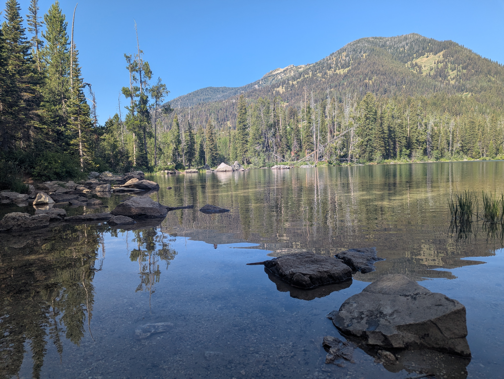
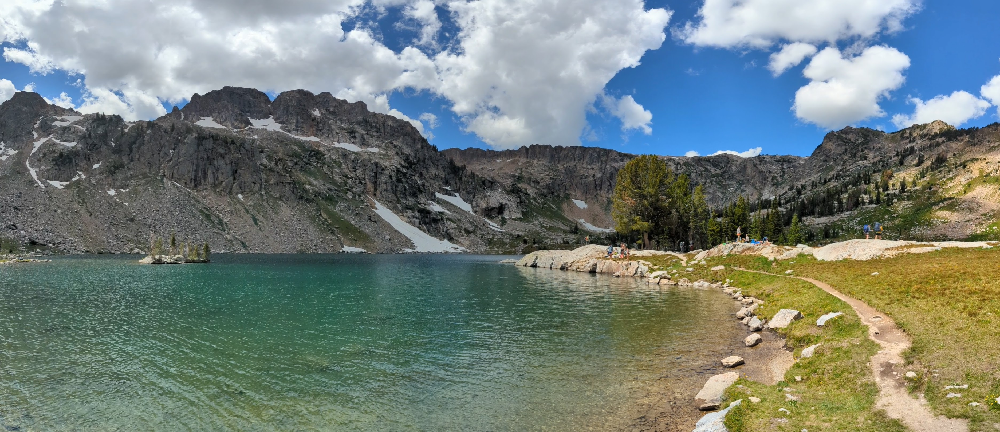
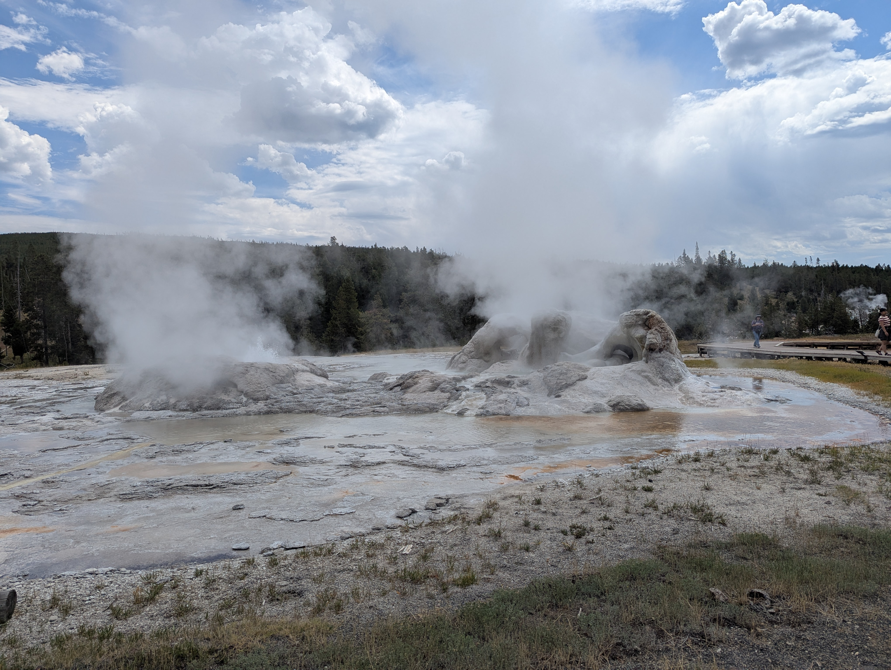
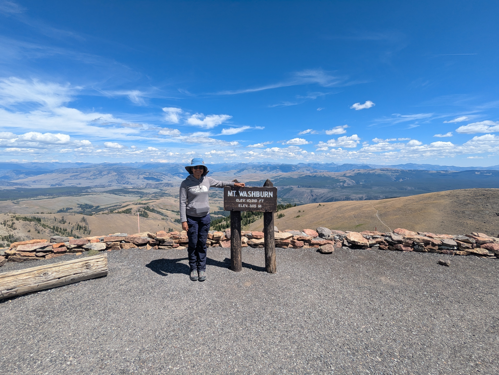
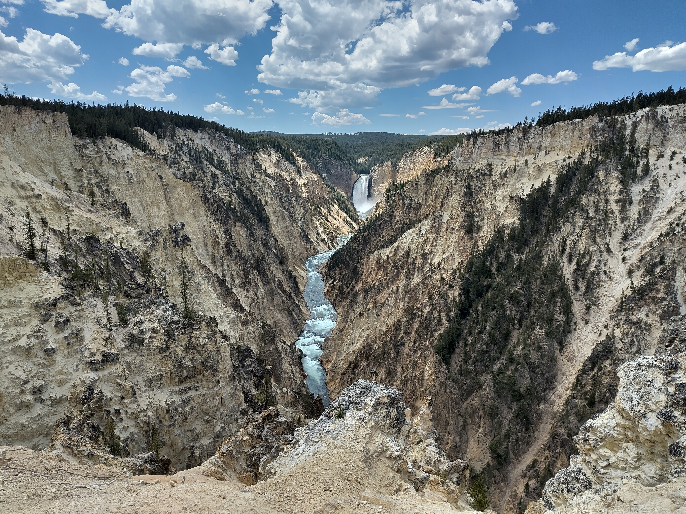

Trip Overview
We drove to and from Fort Collins with a stop in Lander. We used GAIA GPS for navigation, though some trails on the app were no longer maintained. We rented tents, pads, and a camping stove.
Day 1 – Taggart & Bradley Lakes
Arrived at 8:30am by Taggart Lake for a ranger-guided tour. Tried several wild berries, including huckleberries. Continued to Bradley Lake trail. Camped at Colter Bay Campground.

Day 2 – Lake Solitude
Early start for the Lake Solitude trail. We walked to the Jenny Lake trailhead (additional 4 km), but took the boat on the return trip. The bear spray rental machine was so popular here that all 200 sprays were out. We spotted a bear on the way, but it was busy foraging and also there were many people hiking with us, at least until the inspiration point. Total walking distance: ~34 km (8:30am – 5pm).
In the evening, we enjoyed a very educational overview by a park ranger at the Colter Bay outdoor amphitheatre on animal protection and safe behaviour around wild animals.

Day 3 – Yellowstone (West & North)
Drove to Yellowstone and covered much of the western loop. Stops included:
- Lewis Falls (quick lookout)
- Old Faithful – watched eruption from Old Faithful Inn balcony and walked the Upper Geyser Basin trail (7.8 km). Also saw Grand and Daisy erupt.
- Fountain Paint Pot geyser
- Norris and Mammoth geysers (upper & lower terraces)
We had our sandwich lunch after the old faithful walk at a picnic area. Camped at Madison Campground, which we set-up by taking a quick stop before heading over to Norris. Dinner in Gardiner, MT.

Day 4 – Hayden Valley & Mt. Washburn
In Hayden Valley, watched a bear and two coyotes feed on a bison carcass while other bisons tried to protect it. It was very sad. Also saw many bisons.
After this more geothermal activity near the mud volcano, which was super cool.
After this, we drove to Canyon village and rented bear spray. We also had a quick lesson on how to use it. We hiked Mt. Washburn from Dunraven Pass (3,120 m). Had lunch at the summit with views of Yellowstone Canyon and the valley.
Later, visited the North Rim of the canyon, including the brink of the Lower Falls and other viewpoints.
At the end of the day, we made a pitstop at the grand prismatic and on the way back caught a grizzly happily fishing and cleaning its paws up close on the madison river.

Day 5 – Lamar Valley & Canyon South Rim
Drove to Lamar Valley to see large bison herds, cranes, and an osprey nest. Then visited Tower Falls before walking the South Rim trail (~6 km) from Artist’s Point to Sublime Point, and on to Lily Pad Lake.
Returned to Lander in the evening.
